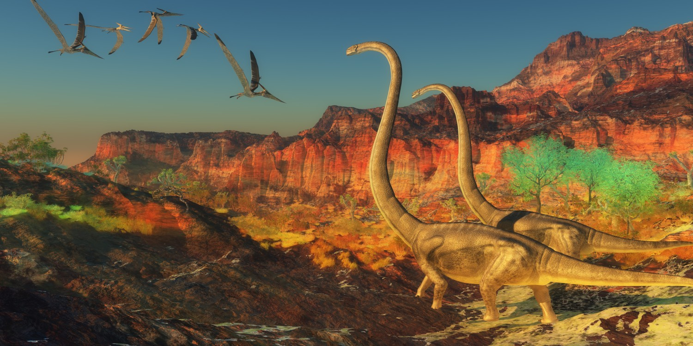
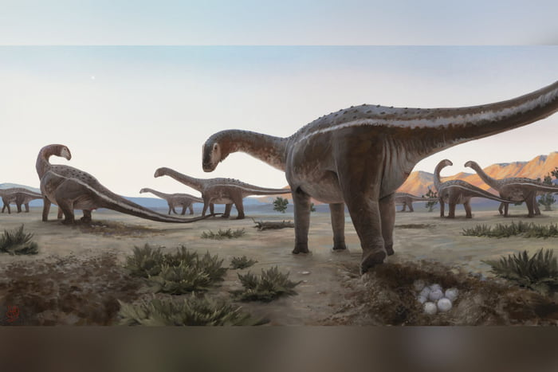

Os dinossauros são algumas das criaturas mais fascinantes que já caminharam sobre a Terra. Eles dominaram o planeta por mais de 160 milhões de anos, desde o final do período Triássico até o fim do período Cretáceo. Esses gigantes pré-históricos vieram em uma incrível variedade de formas e tamanhos, desde o imenso Tyrannosaurus rex até o ágil velociraptor.
Dinossauros são um grupo de répteis que viveram durante a era Mesozoica. Eles pertencem à clade Dinosauria e se dividiram em duas principais categorias: os Saurischia (reptores de quadril com caudas longas) e os Ornithischia (reptores de quadril com caudas mais curtas e pelve semelhante a das aves). Esta diversidade permitiu que os dinossauros ocupassem uma ampla gama de nichos ecológicos.
A era dos dinossauros começou há cerca de 230 milhões de anos e se estendeu até aproximadamente 65 milhões de anos atrás. Durante este período, os dinossauros evoluíram e se diversificaram em várias formas, incluindo:
Os dinossauros foram extintos no final do período Cretáceo, há cerca de 65 milhões de anos, em um evento de extinção em massa que também afetou muitas outras formas de vida. Apesar da extinção, o legado dos dinossauros vive através das aves modernas, que são descendentes diretos dos dinossauros terópodes.
A paleontologia, o estudo dos fósseis, desempenha um papel crucial na nossa compreensão dos dinossauros. Através de escavações e análises de fósseis, os cientistas conseguem reconstruir o passado dos dinossauros e entender como esses incríveis animais viveram, se moveram e se alimentaram.
Os dinossauros continuam a cativar nossa imaginação e fascinar cientistas e entusiastas ao redor do mundo. Seu estudo não apenas nos oferece uma janela para a vida pré-histórica, mas também nos ajuda a entender melhor a evolução e a história da Terra.
